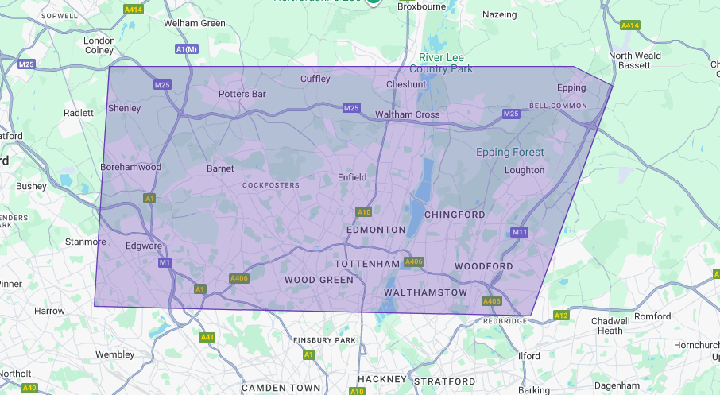

Concrete Shed Base Installation Service - Enfield
We install concrete shed bases for residential gardens across Enfield. This service is for homeowners who need a properly planned and installed concrete base for a garden shed, summerhouse, log cabin, or any other garden outbuilding.
If you’d like clear advice or a fast quote, calling is the quickest way to get started.
Concrete Shed Base Installation Process in Enfield
A concrete shed base in Enfield isn’t just about pouring concrete onto the ground. It’s planned around ground conditions, garden access, intended load, drainage, and long-term performance. We strictly install concrete shed bases for local homeowners in Enfield only.
The process starts well before the concrete is being poured in your garden; it begins at the batching plant, where concrete is produced & checked by the technicians for consistency and strength. Depending on the setup, concrete is either mixed at the plant in the mixer or directly in the volumetric lorry before delivery. This allows timing, quantities, and delivery to be coordinated accurately for residential Enfield sites.
Concrete being loaded into a volumetric lorry before Enfield site installation.
Every stage of the process is important. From how the concrete is produced and scheduled to how it’s installed on site. Once the concrete has been mixed and prepared in the lorry, delivery is coordinated locally so arrival times align with access, setup, and pour readiness at your Enfield property.
When we arrive on site, the area is prepared correctly before any concrete is laid. This includes excavation to the required depth, installing a weed membrane where needed, and creating a compacted sub-base so the concrete has a stable foundation to sit on. Levels are checked before the pour begins to ensure the finished base is flat, even, and suitable for the structure it will support.
Each concrete base for a shed project in Enfield is approached with care and structure. The aim is simple — a concrete base that drains correctly, remains stable, and performs as intended for decades, whilst avoiding common issues such as movement or cracking caused by poor preparation.
If you’ve searched for concrete base installers near me and want a fast, reliable service that's local to Enfield, you’re in the right place.
Why a Proper Concrete Base Matters

Even the best shed will deteriorate quickly if it’s installed on an uneven or poorly prepared surface. Common problems caused by inadequate bases include:
- Doors sticking or binding over time
- Water pooling on the floor or around the structure
- Timber frames twisting due to movement
- Premature rot and structural wear
A well-designed garden shed concrete base in Enfield eliminates these issues. Correct depth, reinforcement where required, and a properly compacted sub-base ensure the slab remains stable and level long-term.
Concrete Shed Bases for Residential Gardens in Enfield
Designed for residential homeowners
This is a specialist service for residential homeowners. We strictly focus on installing solid, flush concrete bases in Enfield gardens, we do not provide the shed itself, we install the concrete base it sits on!
This service focuses solely on the installation of concrete shed bases. The work is centred around correct planning, ground preparation, concrete supply coordination, and installation, making sure your finished base performs properly over time, not just on day one.
Suitable structures
These bases are typically installed for common Enfield residential garden structures where a stable, level foundation is required before the structure is erected.
The base is designed to suit the size, weight, and intended use of the structure it will support.
- Garden sheds and storage buildings
- Summerhouses and garden rooms
- Log cabins and timber structures
- Small workshops and hobby spaces
Built around Enfield garden access
Most shed base installations in Enfield take place in residential gardens rather than open sites. Access is often limited to side passages, shared driveways, or garden-only routes, with neighbouring properties close by. This affects how concrete is delivered, where the equipment needs to be positioned, and how the installation is planned.
Timing, coordination, and preparation all matter, so concrete deliveries are scheduled to suit residential access.
This service is not intended for
This service focuses on the installation of concrete bases rather than the supply or installation of sheds themselves. It is also designed for planned residential garden projects, where access, preparation, and scheduling can be assessed in advance to ensure the base is installed correctly.
- Supplying or installing sheds, cabins, or buildings themselves
- Unplanned or reactive concrete work where site access and preparation cannot be assessed in advance
If your project involves other concrete work or larger-scale installations, this can be discussed when you call so the right approach can be considered.
If you're a local homeowner needing a concrete shed base in Enfield, give us a call and we'll confirm suitability for your concrete base project, your base will be installed with care and precision. Give us a call!
CALL FOR A SAME DAY QUOTEConcrete Bases for More Than Just Sheds
While many customers need a concrete base for a shed in Enfield, this service also covers:
- Summerhouse bases
- Log cabin slabs
- Garden room foundations
- Small workshop bases
- Paving-ready concrete platforms
Each concrete base is designed to suit the structure it supports, rather than using a one-size-fits-all approach.
Confirm suitability for your Enfield property.
The map above is shown for local reference. Final suitability is confiemed when you call
Concrete Shed Base Installation Service in Enfield
If you’re planning a shed, summerhouse, or garden structure, getting the concrete base right from the start makes all the difference. From access and preparation to concrete supply and installation, each base is planned to suit your garden and the structure it will support.
For clear advice or to confirm suitability for your Enfield property, calling is the quickest way to get started.